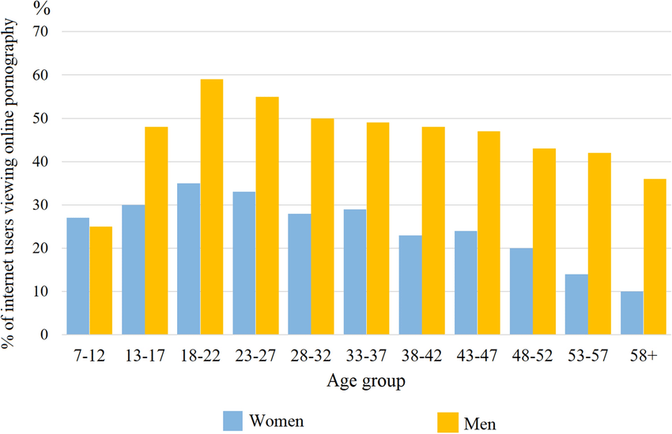
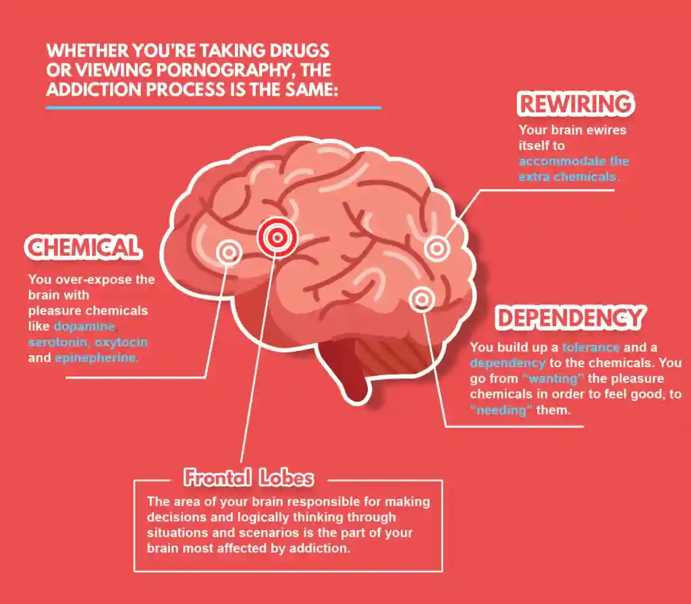

What is Porn Addiction?
Porn addiction, also known as problematic pornography use, is characterized by a compulsive need to view pornographic content despite negative consequences. It can manifest as an inability to control the consumption of pornography, leading to significant distress and impairment in personal, social, or occupational functioning. Symptoms may include preoccupation with pornographic material, unsuccessful efforts to reduce or stop use, and continuing to use despite adverse effects on relationships, mental health, or daily life.
How Common is Porn Addiction?
The prevalence of porn addiction varies widely across studies, primarily due to differing definitions and methodologies. Some research suggests that around 3-6% of the adult population may experience problematic pornography use. However, higher rates have been reported among certain demographics, such as young adults and males. The accessibility of online pornography has contributed to increased exposure and potential for addiction.
The History of Porn Addiction
The concept of porn addiction has evolved over time, particularly with the advent of the internet. In the pre-digital era, access to pornography was limited to print materials and physical media, which naturally constrained consumption. The explosion of internet usage in the 1990s and 2000s brought about unprecedented access to a vast array of pornographic content, leading to more widespread and frequent use. The term "porn addiction" gained prominence as mental health professionals began to observe and document the negative effects associated with compulsive viewing. The integration of porn addiction into discussions of behavioral addictions is still ongoing, with ongoing research into its neurological and psychological impacts.
Why Porn Addiction is Bad
Porn addiction can have numerous adverse effects on individuals and their relationships. It can lead to diminished sexual satisfaction, intimacy issues, and strained relationships due to secrecy and deceit. Psychologically, it may contribute to anxiety, depression, and low self-esteem. Additionally, excessive consumption of pornography can alter brain function, similar to substance addictions, impacting decision-making, impulse control, and reward systems. The cumulative effect can severely impair one's quality of life, necessitating intervention and treatment.
Watch: The Effects of Porn Addiction
References
- National Center for Biotechnology Information (NCBI)
- American Psychological Association (APA)
- National Institute of Health (NIH)
- Mayo Clinic